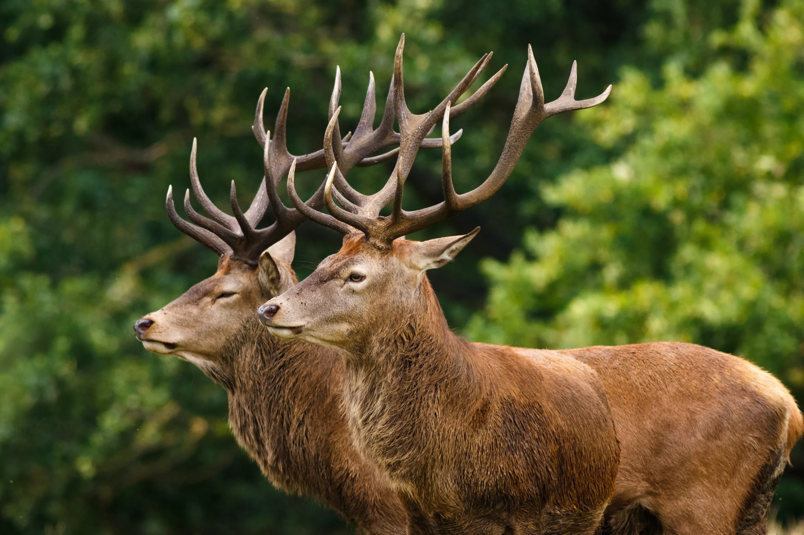

Timber Stand Improvement & Clearing
- Thin crowded timber so sunlight reaches the forest floor
- Cut shooting lanes and open travel corridors
- Leave the bedding cover and edge that hold game

CG Dirt Work and More does habitat and land management for hunters and landowners across the Tulsa metro, Osage County, and northeast Oklahoma. Anyone with a machine can knock down brush. Getting game to hold on a property comes down to how cover, food, and water line up on the ground, and knowing what to cut, what to leave, and what to bring back. That is the work we do.
Good habitat is built on purpose. Here is the work we handle to put the pieces in place.

The difference between a property full of deer and one they only pass through usually comes down to what is missing, and why. We work from what the land is actually doing before anything gets cut.
Habitat work is a plan carried out over seasons, not a single day on the machine. Here is how a property comes together.
Reading how deer, turkey, and quail already use the ground before anything gets cut, so the plan works with the land instead of fighting it.
Thinning timber, cutting lanes, and hinging select trees for low browse, while leaving the bedding cover and edges that keep game on the property instead of clearing it flat.
Pulling invasives, running controlled burns where they fit, and bringing back native grasses, forbs, and shrubs that carry forage and cover across the whole year.
Connecting plots, water, trails, cover, and bedding into one working property, so the pieces support each other instead of standing as four separate jobs.
This is the work CG Dirt Work and More was made for. Rural acreage, hunting leases, and recreational property across Pawnee, Osage, Tulsa, and Rogers County. If you bought land that came thick with cedar and short on deer, or you want a property you already own to hold more game year-round, we set the ground up to do it. You hunt it. We get it ready.
Contact Us


Straight answers to the questions we hear most from hunters and landowners looking to get more out of their property.
Deer stay where bedding cover, year-round forage, and water all sit close together. If your land is short one of those, game drifts to whatever neighboring property has all three. Real habitat work builds that combination on your own ground: opening the canopy so native browse comes back, hinging select trees for low forage, keeping the cover deer bed in, and adding water where the land is dry. We handle habitat and land management across the Tulsa metro and northeast Oklahoma built around exactly that, so game has a reason to stay instead of pass through.
Land clearing knocks brush and timber down to open ground up. Habitat management decides what to cut, what to leave, and what to plant so the property holds wildlife afterward. Clear a place flat and you can actually drive deer off it. We approach clearing as one piece of a larger plan, thinning timber and cutting lanes while keeping the cover and edge game depends on. That is the work that turns raw acres into hunting ground across Pawnee, Osage, Tulsa, and Rogers County.
Most woods around here are too thick to grow anything a deer can reach. Timber stand improvement thins the low-value and invasive trees so sunlight gets to the forest floor, which is where woody browse, forbs, and grasses grow, and browse makes up far more of a deer's diet than acorns do. Done right, it turns a shaded, empty stand of timber into ground that feeds and holds game. We thin with a plan, keep the best mast trees, and leave the structure wildlife uses.
Invasives like eastern red cedar and callery pear crowd out the native plants deer, turkey, and quail actually use, and cedar thickets in particular take over fast while offering next to nothing in return. Clearing them and following up with a controlled burn on a rotation resets that ground and lets native grasses, forbs, and shrubs come back. That native mix is what carries forage and cover through every season, not just during food-plot months.
Yes. Water is one of the strongest draws you can add to a hunting property, and a lot of land in northeast Oklahoma runs short on it. We dig wildlife ponds and waterholes and set them where they pull game and fit the way water already moves across your land. Done right, a water source becomes a spot game returns to on its own, which is exactly what you want come season.
The strongest window is the off-season, late winter through summer, so the land settles and native forage and plots establish before fall. Thinning, invasive removal, and pond work done months ahead give the property time to recover and let game get comfortable before the season opens. That said, there is useful work to do nearly year-round. If you just bought a property or want it ready for the coming fall, give us a call and we will tell you what is realistic for your timeline.
We are based near Tulsa and do habitat and land management work throughout Pawnee, Osage, Tulsa, and Rogers County, including Sand Springs, Sapulpa, Owasso, Cleveland, and the rural acreage around them. If your hunting property sits within about an hour of Tulsa, give us a call and we will let you know what we can do with it.
Coty put years of habitat work into a plain-spoken guide for hunters and landowners who want to set their own property up for game. It covers the how and the why behind the work we do, written so you can actually use it. Drop your email and we will send it straight to your inbox.
No spam. Just the guide and the occasional note about working your land.
We handle habitat and land management work on rural and recreational property throughout Pawnee, Osage, Tulsa, and Rogers County and the communities around Tulsa.

Tell us about your property and what you want it to do, and you will get a straight answer about how to set it up for game.